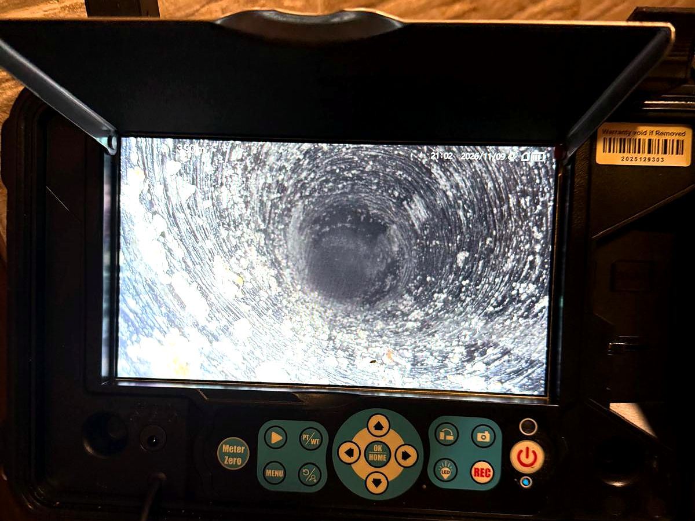
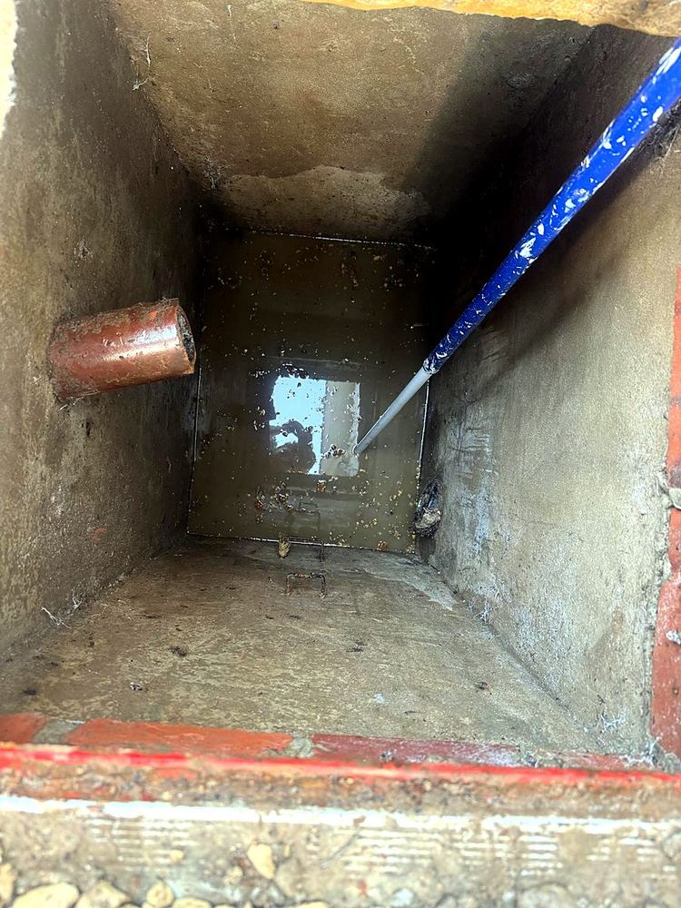

Canalisations bouchées à répétition ? Nos plombiers réalisent une inspection caméra à Bruxelles et en périphérie pour identifier le problème. Prix forfaitaire.



Photos réelles de nos interventions
L'inspection caméra est indispensable pour les problèmes récurrents, l'achat d'une maison ou après des travaux. Elle nous permet de :
Inclus : Rapport d'inspection détaillé et enregistrement vidéo sur demande.
Quand un bouchon revient sans cesse ou qu'on soupçonne une fuite, une casse ou des racines, l'inspection caméra permet de voir l'intérieur de la canalisation au lieu de deviner. On évite ainsi de casser au mauvais endroit.
Nous introduisons une caméra étanche dans la canalisation. L'écran affiche en direct l'intérieur du tuyau et la distance parcourue, ce qui permet de localiser précisément un problème. Nous pouvons enregistrer les images pour vous, votre assurance ou votre syndic.
Nous vous donnons une estimation gratuite par téléphone, et le prix est confirmé sur place avant de commencer. Pas de compteur qui tourne. Nous sommes chez vous en moins de 30 minutes à Bruxelles et en moins d'une heure en périphérie, 24h/24 et 7j/7. Si le problème revient, nous revenons : satisfait ou refait.
Dans les 19 communes de Bruxelles : Anderlecht, Auderghem, Berchem-Sainte-Agathe, Bruxelles-Ville, Etterbeek, Evere, Forest, Ganshoren, Ixelles, Jette, Koekelberg, Laeken, Molenbeek-Saint-Jean, Saint-Gilles, Saint-Josse-ten-Noode, Schaerbeek, Uccle, Watermael-Boitsfort, Woluwe-Saint-Lambert et Woluwe-Saint-Pierre. En périphérie : Wemmel, Meise, Grimbergen, Vilvoorde, Machelen, Zaventem, Kraainem, Dilbeek, Asse et Drogenbos.
Oui, elle révèle l'état des égouts (fissures, racines, affaissements) avant que vous ne signiez.
Souvent oui : un nettoyage haute pression permet d'avoir une image claire de la paroi du tuyau.
Oui, nous enregistrons la vidéo et les photos de l'inspection sur demande.
Contactez-nous pour un devis rapide.